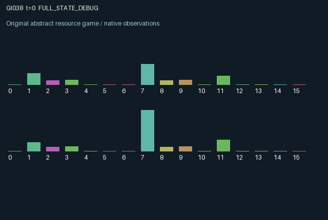

GI038 / LEGACY_ARRAY
astra-d2-00038: Coupled thermal queues with delayed vent externalities
2 agents5 actions16 observation columns32 original horizonRuntime: PASS
Release verification episode
Untrained uniform legal actions. Actual JAX state sampled along the full original episode; full-state debug camera. No human performance or learning claim.

Run this game
crucibles play --game 38
Start Python locally, then open the address printed by the terminal. Installation, multiplayer, takeover and keyboard controls →
Objective, rewards & ending
Exact task contract
{
"objective": "Accumulate original per-agent rewards under the interaction rules in mechanism.md.",
"natural_termination": "No early terminal; original t >= 32 horizon.",
"exact_transition_and_reward_source": "def raw_step(self, key, state, actions):\n absorbed = state[\"pulse\"] * state[\"shield\"][:, None]\n effective_heat = jnp.clip(state[\"heat\"] + state[\"pulse\"] - absorbed, 0.0, 3.0)\n route_mask = jax.nn.one_hot(actions - 1, 2, dtype=jnp.float32)\n routed = (actions == 1) | (actions == 2)\n chosen_heat = jnp.sum(effective_heat * route_mask, axis=1)\n service = jnp.minimum(state[\"backlog\"], 1.0) * (routed & (chosen_heat < 1.25)).astype(jnp.float32)\n work_heat = route_mask * (0.65 * service[:, None])\n hottest = jnp.argmax(effective_heat, axis=1)\n vent_mask = jax.nn.one_hot(hottest, 2, dtype=jnp.float32)\n vent_heat = vent_mask * jnp.minimum(effective_heat, 0.7) * (actions == 4).astype(jnp.float32)[:, None]\n local_spread = (1.0 - route_mask) * (0.12 * service[:, None])\n cooling = 0.18 + 0.22 * (actions == 0).astype(jnp.float32)\n next_heat = jnp.clip(effective_heat + work_heat + local_spread - vent_heat - cooling[:, None], 0.0, 3.0)\n next_pulse = 0.32 * jnp.roll(work_heat, 1, axis=0) + 0.8 * jnp.roll(vent_heat, (1, 1), axis=(0, 1))\n next_shield = jnp.clip(state[\"shield\"] - 0.5 * jnp.sum(absorbed, axis=1) + 0.45 * (actions == 3).astype(jnp.float32), 0.0, 1.0)\n arrival = 0.15 + 0.65 * (jnp.mod(state[\"t\"] + state[\"phase\"], 3) == 0).astype(jnp.float32)\n unbounded_backlog = state[\"backlog\"] - service + arrival\n overflow = jnp.maximum(unbounded_backlog - 5.0, 0.0)\n next_backlog = jnp.clip(unbounded_backlog, 0.0, 5.0)\n next_state = {\n \"t\": state[\"t\"] + jnp.array(1, dtype=jnp.int32),\n \"backlog\": next_backlog,\n \"heat\": next_heat,\n \"pulse\": next_pulse,\n \"shield\": next_shield,\n \"phase\": state[\"phase\"],\n \"last_service\": service,\n \"last_action\": actions.astype(jnp.int32),\n }\n hot_cost = 0.08 * jnp.maximum(jnp.max(next_heat, axis=1) - 1.7, 0.0)\n rewards = jnp.clip(0.55 * service - 0.035 * next_backlog - hot_cost - 0.03 * (actions == 3).astype(jnp.float32) - 0.02 * (actions == 4).astype(jnp.float32) - 0.12 * overflow, -1.0, 1.0).astype(jnp.float32)\n done_all = next_state[\"t\"] >= 32\n dones = jnp.full((2,), done_all, dtype=jnp.bool_)\n info = {\"done_all\": done_all, \"legal_mask\": self.legal_actions(next_state)}\n return self.observe(next_state), next_state, rewards, dones, info"
}Declared per-step reward bounds: -1.0 to 1.0. Observability: source_defined.
Rules
Original mechanism document (historical status wording retained)
# astra-d2-00038: Coupled thermal queues with delayed vent externalities This parentless mechanism is related to queue scheduling, thermal throttling and congestion externalities. It proposes physical state coupling rather than a claim of benchmark novelty. No other proposal or benchmark source was inspected; duplicate and mechanism review remain separate. Each agent owns a backlog and two processing channels. Actions are 0 idle with extra cooling, 1 process through channel 0, 2 process through channel 1, 3 rebuild insulation, and 4 vent the hottest channel. Incoming heat pulses from the prior transition first reach local channels, reduced by the insulation already present. A selected channel serves up to one queued unit only if this effective temperature is below 1.25. Service generates heat on that channel and smaller spread to the other local channel. A service-generated pulse reaches the counterpart's same channel in the next state. Venting immediately removes up to 0.7 heat from the local hottest channel but puts 80 percent of the removed heat in the counterpart's opposite channel as a pending pulse. Pending pulses are consumed once at the following step. Insulation absorbs a fraction of incoming pulse heat and wears by half of the absorbed amount; a rebuild action adds 0.45 insulation for future steps, capped at one. All channels cool by 0.18, with an additional 0.22 on an idle action. Thus rebuilding cannot retroactively protect against the current arrival and venting exports a delayed burden. New work arrives after service: 0.15 every step plus 0.65 on each agent's private three-step phase. Excess beyond a queue capacity of five is lost and penalized. The phase is reset randomness, not selected from any score. Temperature is bounded at three. Observation columns 0..15 are time/32; own queue/5; own channel temperatures/3; own two pending pulses; own insulation; own phase/2; counterpart temperatures/3; counterpart insulation; counterpart queue/5; own and counterpart last service; own and counterpart prior actions/4. The other agent's arrival phase and pending pulses are not directly observed. Service, queue, current temperature and insulation are public. Neither agent can instantly eliminate its partner's backlog, but each can change the partner's later service feasibility through emitted heat. Reward is 0.55 times serviced work, minus 0.035 times next backlog, minus 0.08 times temperature above 1.7 on the hottest next-state channel, minus 0.03 for insulation work, 0.02 for venting and 0.12 times discarded arrivals. Explicit clipping guarantees [-1,1]. Since service is at most one, backlog at most five, heat at most three and overflow at most 0.8, the formula is bounded even before clipping. Agents can gain from servicing their own work yet impose future costs on the counterpart; routing, cooling and insulation mediate that conflict. All five actions are legal. Reset uses explicit independent subkeys for initial queues, heat and phases. Subsequent transitions are deterministic and do not use the step key. Both dones become true at raw step 32 without resetting state. Status: source authored but not executed or validated. No compiler, eligibility, nonisomorphism or effectiveness claim is made.
Commands
0Cool
1Route job type 0
2Route job type 1
3Restore shield
4Vent heat
Roles & abilities
agent_0 Original legacy agent; see mechanism and source
agent_1 Original legacy agent; see mechanism and source
Observation permissions
Training receives only the original observation rows. Role cameras use declared visibility; debug cameras are explicitly marked. Local benchmark records log debug exposure and role takeover history.
Exact observation layout
[
{
"slice": [
0,
16
],
"visibility": "exact original observe() below",
"source_code": "def observe(self, state):\n other = jnp.array([1, 0], dtype=jnp.int32)\n obs = jnp.zeros((2, 16), dtype=jnp.float32)\n obs = obs.at[:, 0].set(state[\"t\"].astype(jnp.float32) / 32.0)\n obs = obs.at[:, 1].set(state[\"backlog\"] / 5.0)\n obs = obs.at[:, 2].set(state[\"heat\"][:, 0] / 3.0)\n obs = obs.at[:, 3].set(state[\"heat\"][:, 1] / 3.0)\n obs = obs.at[:, 4].set(state[\"pulse\"][:, 0])\n obs = obs.at[:, 5].set(state[\"pulse\"][:, 1])\n obs = obs.at[:, 6].set(state[\"shield\"])\n obs = obs.at[:, 7].set(state[\"phase\"].astype(jnp.float32) / 2.0)\n obs = obs.at[:, 8].set(state[\"heat\"][other, 0] / 3.0)\n obs = obs.at[:, 9].set(state[\"heat\"][other, 1] / 3.0)\n obs = obs.at[:, 10].set(state[\"shield\"][other])\n obs = obs.at[:, 11].set(state[\"backlog\"][other] / 5.0)\n obs = obs.at[:, 12].set(state[\"last_service\"])\n obs = obs.at[:, 13].set(state[\"last_service\"][other])\n obs = obs.at[:, 14].set(state[\"last_action\"].astype(jnp.float32) / 4.0)\n obs = obs.at[:, 15].set(state[\"last_action\"][other].astype(jnp.float32) / 4.0)\n return obs"
}
]Entity visibility & attributes
[]
Actual verification & provenance
Per-game execution receipt
{
"game": "gi038",
"status": "PASS",
"verification_revision": 2,
"source_sha256": "3ed78f4e7ecf44fcdc0416c6f18a2e062b92b56ce69c597b0d443590d46fe9e3",
"seed": 20261101,
"runtime": {
"jax": "0.4.38",
"numpy": "1.26.4",
"devices": [
"TFRT_CPU_0"
]
},
"dimensions": {
"num_agents": 2,
"observation_size": 16,
"num_actions": 5,
"max_steps": 32
},
"checks": {
"eager_reset": {
"status": "PASS",
"seconds": 1.388214111328125
},
"observation_spaces_legal_masks": {
"status": "PASS",
"seconds": 0.18066835403442383
},
"eager_step": {
"status": "PASS",
"seconds": 0.8668620586395264
},
"jit_reset": {
"status": "PASS",
"seconds": 0.44216465950012207
},
"jit_step": {
"status": "PASS",
"seconds": 0.3224365711212158
},
"eager_jit_integer_parity_float_measurement": {
"status": "PASS",
"seconds": 0.0010008811950683594
},
"jit_vmap_reset": {
"status": "PASS",
"seconds": 0.49277496337890625
},
"jit_vmap_step": {
"status": "PASS",
"seconds": 0.2565736770629883
},
"outer_autoreset_api": {
"status": "PASS",
"seconds": 0.8314049243927002
},
"full_original_horizon_episode_and_render": {
"status": "PASS",
"seconds": 0.8444716930389404
}
},
"human_scores": null,
"browser_controls": "PENDING",
"failures": [],
"elapsed_seconds": 6.183578729629517,
"float_parity_max_abs": 7.450580596923828e-09,
"numerical_parity": "UNDETERMINED_NONZERO_FLOAT_DIFFERENCE",
"raw_terminal_absorbing": "NOT_PART_OF_ORIGINAL_LEGACY_CONTRACT",
"terminal_outer_reset": "PASS",
"episode_steps": 32,
"scripted_random_returns": [
5.188603105023503,
2.6459710877388716
],
"terminal": true,
"demo_information": "FULL_STATE_DEBUG",
"demo_frames": 33,
"render_roles_checked": 2
}Chromium control verification
{
"game": "gi038",
"status": "PASS",
"human_scores": null,
"engineering": true,
"checks": [
"catalog_selected_and_real_native_reset",
"dom_queue_and_native_step",
"second_participant_ownership_and_native_joint_step",
"all_roles_individually_controllable_no_role_cap",
"explicit_debug_camera",
"release_to_pure_ai_without_reset",
"close_session_preserves_log"
],
"ui_sha256": "96243f9de144b80b5e20a114330e2206bdcd58d3efc9c6f13bbc08b95cacc14d",
"keyboard": "NO_LEGAL_CARDINAL_COMMAND_FOR_ROLE0_AT_RESET",
"seconds": 4.28480863571167
}Original identity and file hashes
{
"id": 38,
"key": "gi038",
"title": "astra-d2-00038: Coupled thermal queues with delayed vent externalities",
"summary": "",
"tags": [],
"family": "legacy_array",
"dimensions": {
"num_agents": 2,
"observation_size": 16,
"num_actions": 5,
"max_steps": 32
},
"source_sha256": "3ed78f4e7ecf44fcdc0416c6f18a2e062b92b56ce69c597b0d443590d46fe9e3",
"manifest_sha256": "c18f2ce310d0fdc92b2bad4d0fd5b586f1a5f3424922983b6a71acc3086bd34c",
"files": [
{
"file": "candidate.py",
"sha256": "3ed78f4e7ecf44fcdc0416c6f18a2e062b92b56ce69c597b0d443590d46fe9e3",
"bytes": 4604,
"origin": "work/exp_2/astra_generation/discovery_v2/initial/candidate_00038/attempt_00/candidate.py"
},
{
"file": "mechanism.md",
"sha256": "5fc1941c58c23a6d2e5ec13e88ffe52ae0f72cb01afa35e1ede75143b06667f5",
"bytes": 3265,
"origin": "work/exp_2/astra_generation/discovery_v2/initial/candidate_00038/attempt_00/mechanism.md"
}
],
"original_status": "LEGACY_SOURCE",
"original_saved_replay": false,
"release_validation": "PASS",
"human_scores": null,
"browser_validation": "PASS"
}